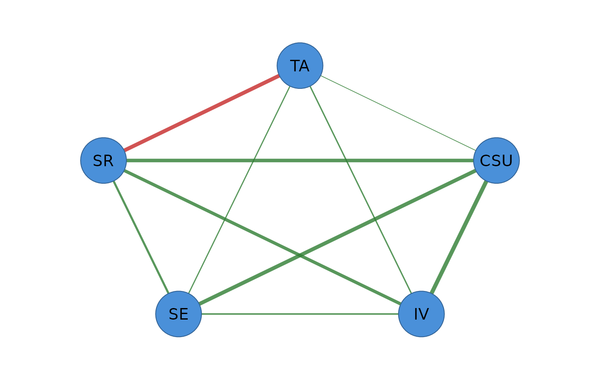

Every estimator (cor_network(), ebic_glasso(), ising_fit(),
mgm_fit(), ..., and the front door psychnet()) returns an object of class
c("psychnet", "cograph_network"). Read it with print(), summary() and
as.data.frame(), and draw it with plot(), which hands it to
cograph::splot(). Diagnostics computed from it (net_centralities(),
net_boot(), net_stability(), ...) have their own result classes, with
methods documented on those verbs' pages.
Usage
# S3 method for class 'psychnet'
plot(x, ...)
# S3 method for class 'psychnet'
x$name
# S3 method for class 'psychnet'
print(x, ...)
# S3 method for class 'psychnet'
as.data.frame(x, row.names = NULL, optional = FALSE, ..., include_zero = FALSE)
# S3 method for class 'psychnet'
summary(object, ...)Arguments
- x, object
A
psychnetobject.- ...
For
plot(), passed tocograph::splot(); ignored by the other methods.- name
For
$: a field name. Besides the stored fields, the legacy aliasesgraph(=weights),labels(the node labels),n_nodes,n_edgesandn_obs(=n) are recognised.- row.names, optional
Ignored (S3 consistency).
- include_zero
For
as.data.frame(): ifTRUE, keep zero-weight (absent) edges. DefaultFALSE.
Value
print() returns x invisibly. as.data.frame() returns a
data frame with one row per edge and columns from, to (node labels)
and weight. summary() prints the network and its edge-weight range and
returns the same edge table invisibly. plot() returns the value of
cograph::splot() invisibly. $ returns the requested field, or NULL
when the name is neither a stored field nor a known alias.
Details
The stored fields follow the cograph/Nestimate network object: weights
(the p x p weighted adjacency matrix with zero diagonal; partial
correlations for the Gaussian models, symmetrized regression weights for
Ising and mixed models), nodes (data frame id, label, name), edges
(integer node indices from, to and weight, the cograph format; use
as.data.frame() for labelled edges), directed, method and n (sample
size), plus method-specific fields such as precision, lambda, gamma,
cor_matrix, kkt, thresholds, types and nodewise. Read the
optimality certificate with certificate().
Functions
plot(psychnet): Draws the network withcograph::splot()(a Suggested package; an error says so when it is not installed).$: Field access, including the legacy aliases.print(psychnet): The estimator, node and edge counts, the selected penalty and the certificate: the optimality (KKT) residual for the regularized / constrained estimators, the structural certificate for TMFG (number of violated invariants) and relimp (decomposition residual).as.data.frame(psychnet): The tidy edge list, one row per edge.summary(psychnet): The printout plus the edge-weight range.
Examples
fit <- pcor_network(SRL_GPT)
fit
#> <psychnet> pcor network
#> nodes: 5 edges: 10 (undirected)
summary(fit)
#> <psychnet> pcor network
#> nodes: 5 edges: 10 (undirected)
#> edge weight: range [-0.390, 0.414], mean 0.176
as.data.frame(fit)
#> from to weight
#> 1 CSU IV 0.41366984
#> 2 CSU SE 0.38511179
#> 3 IV SE 0.14991214
#> 4 CSU SR 0.36093733
#> 5 IV SR 0.32444290
#> 6 SE SR 0.20913531
#> 7 CSU TA 0.06697959
#> 8 IV TA 0.12908925
#> 9 SE TA 0.11123319
#> 10 SR TA -0.39003887
as.data.frame(fit, include_zero = TRUE)
#> from to weight
#> 1 CSU IV 0.41366984
#> 2 CSU SE 0.38511179
#> 3 IV SE 0.14991214
#> 4 CSU SR 0.36093733
#> 5 IV SR 0.32444290
#> 6 SE SR 0.20913531
#> 7 CSU TA 0.06697959
#> 8 IV TA 0.12908925
#> 9 SE TA 0.11123319
#> 10 SR TA -0.39003887
if (requireNamespace("cograph", quietly = TRUE)) plot(fit)
